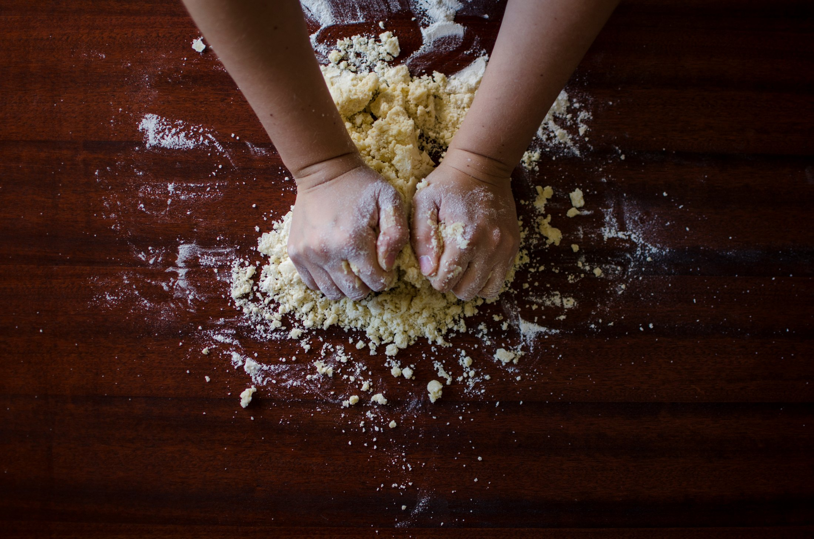
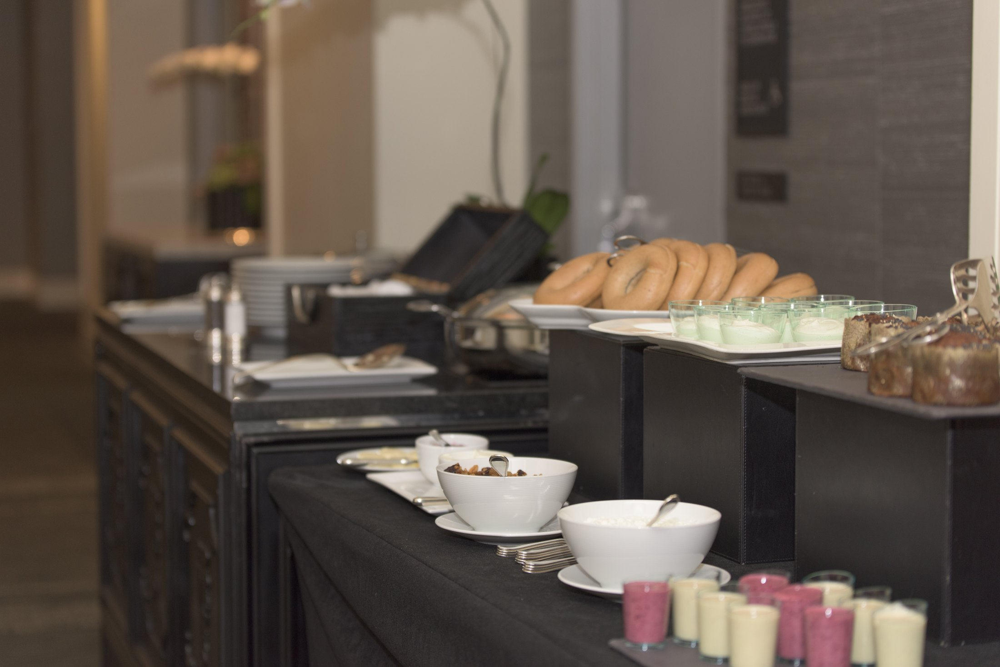
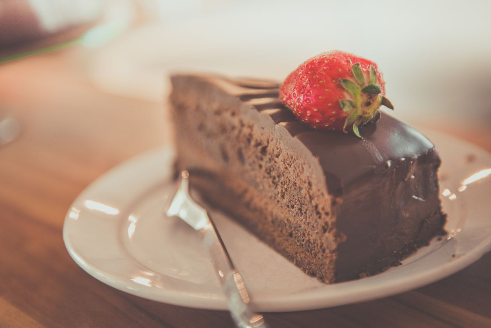
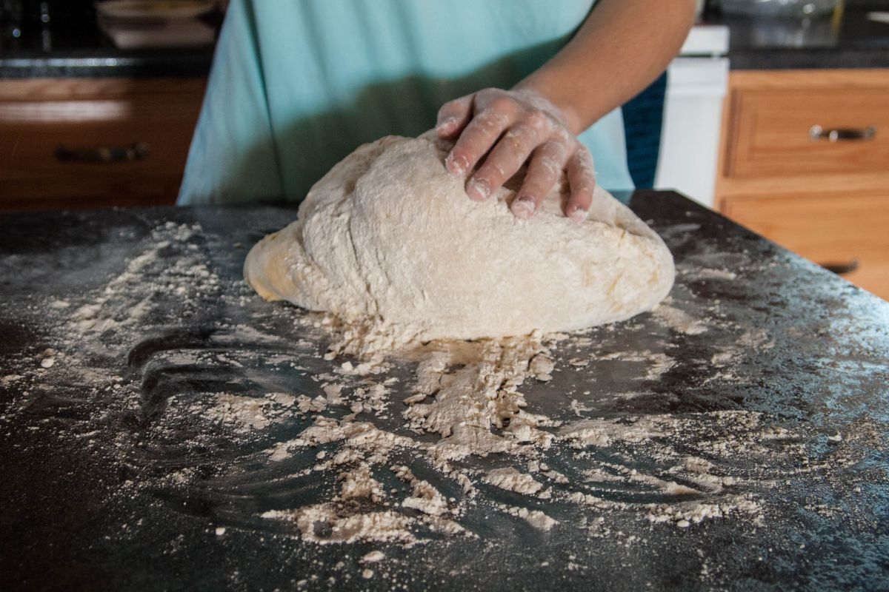
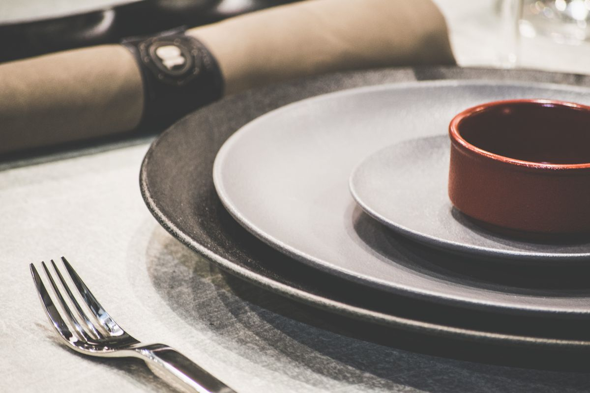
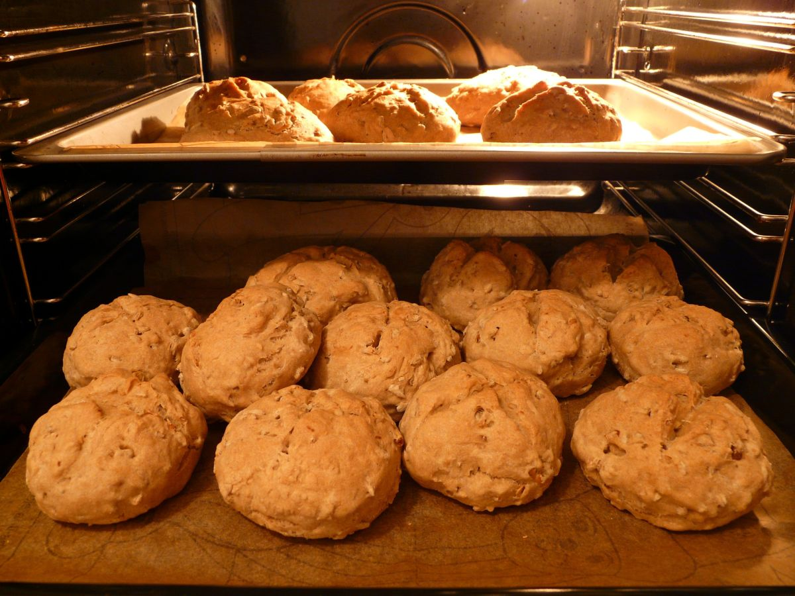
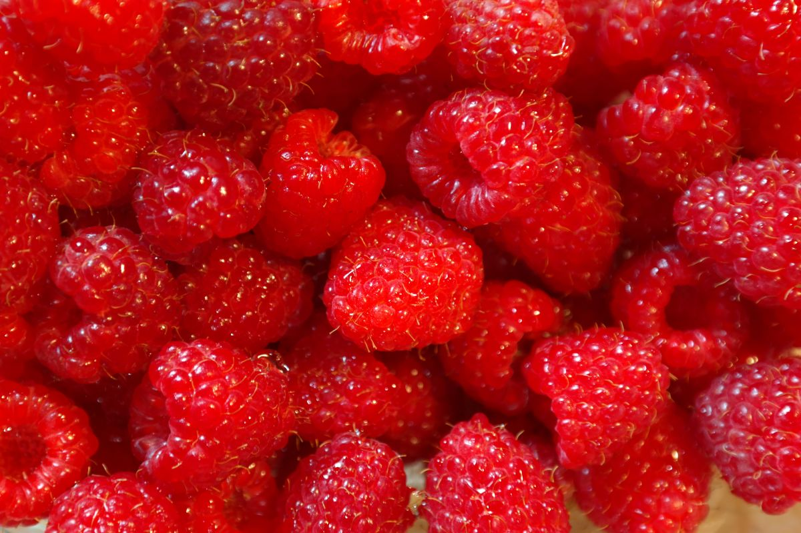
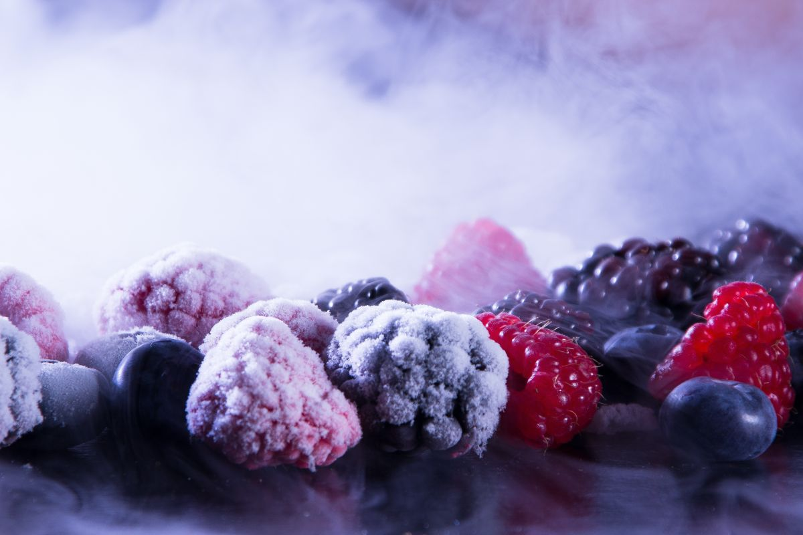

Repostería familiar · Puerto Varas
Llegue antes de las doce.
Es el mejor consejo que le podemos dar. Abajo está la vitrina completa: qué kuchen hay según la época, a qué hora sale del horno y hasta qué hora suele durar.
- +20años de horno, en familia
- 1título de mejor kuchen de Puerto Varas
- 0páginas web hasta hoy
La pieza que ninguna repostería publica
La vitrina del día.
No es una carta: es la vitrina. Qué hay, de qué época es la fruta, a qué hora sale y hasta cuándo alcanza. Las horas y las variedades van como ejemplo hasta que la familia las confirme.
-
Kuchen de nuez
Todo el año
Masa quebrada y relleno de nuez molida. El que nunca falta y el que más se lleva entero.
- Sale del horno
- 09:30
- Suele durar hasta
- media tarde
-
Kuchen de frambuesa
Diciembre a marzo
Con fruta de la temporada, no congelada. Por eso existe cuatro meses al año y por eso se acaba primero.
- Sale del horno
- 10:00
- Suele durar hasta
- mediodía
-
Kuchen de manzana
Marzo a agosto
Manzana en gajos y canela. El de invierno, el que pide café al lado.
- Sale del horno
- 09:30
- Suele durar hasta
- la tarde
-
Streusel
Todo el año
La cubierta de migas de mantequilla, harina y azúcar. Va sobre casi cualquier fruta y es lo que más se pide «con harto encima».
- Sale del horno
- 09:30
- Suele durar hasta
- media tarde
-
Kuchen de murta
Marzo a mayo
La fruta del sur que sólo existe unas semanas. Cuando hay, hay; cuando no, no se reemplaza por otra cosa.
- Sale del horno
- 10:00
- Suele durar hasta
- temprano
-
Torta de mil hojas
Por encargo
No va a la vitrina: se hace pedida, con los días de anticipación que correspondan.
- Aviso mínimo
- por confirmar
- Se retira
- en el local
«Llegue antes de las doce si quiere el de frambuesa» es un dato que no existe en ninguna carta y que todo el mundo agradece. Escrito acá, además, es lo que hace que alguien planifique la visita.

Veinte años amasando la misma receta.
No es nostalgia: es la única forma de que el kuchen de hoy sepa igual que el de hace diez años.
La familia
Más de veinte años, en la misma casa.
Repostería Hagemann es un negocio familiar pequeño y eso, en este rubro, es el argumento entero. Ganadores del «mejor kuchen» de Puerto Varas, según lo que ustedes mismos publican.
Acá va la foto de la familia y quién hace qué. En una repostería con veinte años, esa foto vale más que cualquier imagen de banco — y es lo único de esta página que no podemos poner nosotros.
El oficio
Cómo se reconoce un kuchen bien hecho.
Sin recetas: cuatro señales que cualquiera puede mirar antes de comprar, en cualquier parte.
- La masa se ve, no se adivina Debe distinguirse del relleno y sostenerse sola al cortar. Si se desarma, tenía demasiada humedad o poca mantequilla.
- La fruta no nada Fruta de temporada suelta menos agua. La que va congelada deja un charco entre la masa y el relleno — se nota en el borde del corte.
- El borde está dorado, no pálido Un borde blanco es horno corto. Ese kuchen se ve bonito entero y queda crudo al fondo.
- El streusel es de migas, no de polvo Se hace con los dedos, no con máquina. Si quedó arena, faltó mantequilla.

«El kuchen de frambuesa existe cuatro meses al año. El resto es otra cosa con el mismo nombre.»
La vitrina
Lo que sale del horno.






Encargos
Tortas y kuchen por encargo.
Para cumpleaños, once grande o para llevar de regalo fuera de la región. Con estos datos la repostería confirma si alcanza para la fecha.
- Dónde están
- Puerto Varas
- Dónde están hoy
- Instagram @reposteriahagemann
- Dirección y teléfono
- No aparecen publicados
- Horario
- De martes a domingo, desde temprano
El horario y la dirección son lo primero que busca un turista. Hoy no están escritos en ninguna parte.
Armar el encargo
Sin JavaScript el enlace al Instagram sigue funcionando. Lo único que se pierde es que el texto se arme solo.
Para la familia
Qué es esto y qué falta.
Qué es
Una propuesta de sitio web hecha por nuestra cuenta. Repostería Hagemann no la encargó ni la ha revisado. Dimos por cierto sólo lo que ustedes publican: los más de veinte años de experiencia y el título de mejor kuchen de Puerto Varas, que citamos como declaración suya.
Qué es ejemplo
Las variedades, las horas de horno, las temporadas, el horario y la dirección. Las cuatro señales del kuchen bien hecho son criterio de oficio, sin recetas ni proporciones.
Qué cambiaría la página entera
La vitrina real con sus horas, y una foto de la familia. Esa tabla de a qué hora sale y hasta cuándo dura es información que nadie más publica, y es exactamente lo que hace que el turista programe la visita.